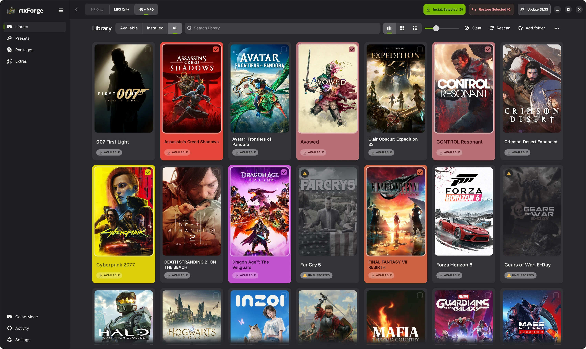

Game Mode
Browse your library and change settings with a controller.
 rtxForge
rtxForge
Add neural rendering, multi-frame generation, and DLSS updates to compatible games. Manage it all from your library.
For Linux desktops and Game Mode.

Public Beta 1
For RTX 20, 30, 40, and 50 series.
RTX 50 keeps its native MFG.
Install neural rendering (NR), multi-frame generation (MFG), or both. The app shows what your game supports.
Set defaults for your library. Fine-tune each game when you want to.
See what will change before you install. Your original files stay backed up.
Use Adapt to Linux for supported games already set up on Windows. Keep the same game files.
Browse your library and change settings with a controller.
Adjust NR and MFG while you play.
This is a beta. Support varies by game and package. Neural rendering is experimental.
Tell us what worked, or what didn’t.
Linux x86_64 with a working NVIDIA driver.
Installs support RTX 20, 30, 40, and 50 series with compatible games and packages. RTX 50 uses its own MFG, so rtxForge skips the unlock. NR is experimental. Start with one game, and avoid protected online games and anti-cheat.
Install the app, choose a game and package, then review the install.
Follow the setup guideYes. Use Restore Original Files to return to the files rtxForge backed up. Keep those backups. Updates made through DLSS Files have their own restore controls.
For supported Windows installs on a shared drive, use Adapt to Linux in the Linux app. It sets up the Proton side and leaves your Windows setup alone.
Open Settings → Overlay in the app. Check the shortcut shown there, and use Update Overlays for installed games. The setup guide walks through it.
Tell us what happened. You can add logs later.
Report a bug